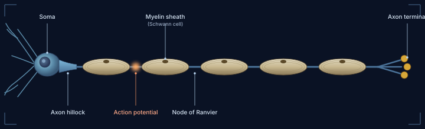
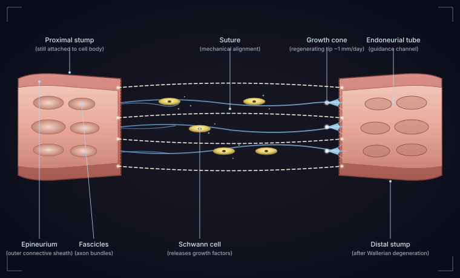
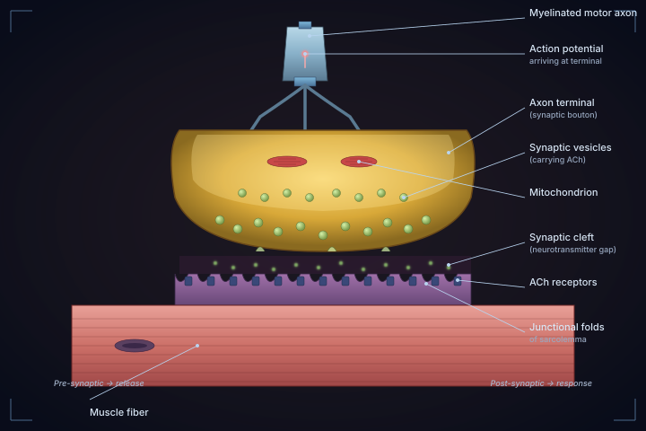

Marma
A microscopic exploration of regeneration, repair, and the engineered interface between them
Scattered through the tissue: synaptic shortcuts. Hover the field to find them.
A microscopic exploration of regeneration, repair, and the engineered interface between them
Scattered through the tissue: synaptic shortcuts. Hover the field to find them.
Researcher · Founder · Translator of biology into product
My path into research began with a question that did not have a clean answer: when tissue is injured, what determines whether it heals into something functional or scars into something compromised? That question has shaped every direction I have moved in since. Research, for me, is the discipline of refusing to accept "we don't fully understand it yet" as a stopping point — and the patience to live with partial answers long enough to find the experiment that resolves them.
My entry into neuroscience came through the peripheral nervous system, where the biology of regeneration is paradoxically both elegant and unforgiving. Severed axons can regrow at roughly a millimeter per day through the empty endoneurial channels left behind after Wallerian degeneration — a remarkable feat of self-repair — but only if the architecture is held in alignment long enough for the regrowth to find its target. The role of the suture in this process struck me as philosophically interesting: a piece of inert thread, properly placed, is the difference between functional reinnervation and a painful neuroma. That observation has shaped the trajectory of my work since.
From peripheral nerve repair, my interest expanded into the broader landscape of regenerative medicine — the engineered scaffolds, growth factor delivery systems, and decellularized matrices that define the modern field. What unites these threads is the recognition that the mechanical and the biological are not separable problems. The scaffold shapes the cell behavior; the cell behavior shapes the tissue outcome. Designing for one without consideration of the other is the failure mode of most interventions that never reach the clinic.
The decision to translate this work into a company came from a simple observation: the science required to engineer better regenerative interventions exists, but the path from a working prototype to a surgeon holding it in an operating room is not a scientific path — it is a regulatory, financial, and operational one. I founded Marma because the research I care about will not reach patients unless someone takes responsibility for that translation, and I would rather be that person than wait for one.
My business outlook is shaped by the same posture as my research: rigor over speed, evidence over narrative, and a willingness to abandon a line of work the moment the data argues against it. Building a regenerative medicine company is not a sprint to a press release; it is a multi-year discipline of generating the right evidence in the right sequence, choosing partners who share that posture, and preserving the integrity of the science under the pressure of every milestone. I am building Marma to be that kind of company.
Editor's note: This section is written as a structural starting point. Personalize the biographical specifics — institution, mentors, formative experiences, and exact research path — by editing the text in this section directly.

The vocabulary of my work: a myelinated axon, with the Schwann cells that wrap it, the nodes of Ranvier between them, and the action potential that races from soma to terminal.
The framework of regenerative repair, in the language I think in
A scar closes a wound but does not restore function. A regenerated tissue, in contrast, returns to something close to its original architecture and capability. Most of medicine, surgical and otherwise, currently operates in the territory of repair. Regenerative medicine is the discipline of moving interventions from one column to the other — from "the patient survived" to "the tissue functions as it did before." The distinction is not academic. It is the difference between a peripheral nerve injury that recovers grip strength and one that leaves a hand permanently weakened.
Sutures, scaffolds, and conduits are usually described as mechanical tools — they hold tissue in place. But the moment a foreign material enters the body, it begins shaping the biological response around it. The architecture of a scaffold determines which cells colonize it. The surface chemistry of a suture determines whether platelets aggregate, whether fibroblasts deposit collagen aligned or chaotic, whether macrophages adopt a pro-inflammatory or pro-resolution phenotype. To design a "purely mechanical" surgical material is to design a biological intervention without acknowledging it. Better, I think, to acknowledge it and engineer accordingly.
Wound healing unfolds in well-characterized phases — hemostasis in the first minutes, inflammation across the first days, proliferation across the first weeks, remodeling across the first months. Each phase has its own dominant cell types, signaling environment, and failure modes. An intervention designed to influence only one phase often produces effects that ripple unpredictably into the others. The interventions I find most interesting are those engineered to speak to multiple phases on their own timelines — releasing the right signal at the right moment rather than continuously broadcasting a single message.
In peripheral nerve repair, the suture itself is mechanical — a knot of nylon thinner than a human hair. The biology — Wallerian degeneration, Schwann cell migration, growth cone navigation, myelination — happens in the space the sutures define. Modern regenerative medicine is increasingly about engineering that space: the nerve conduits, the growth-factor-loaded matrices, the decellularized scaffolds. The sutures no longer simply hold the architecture together; they are anchors for an actively guided regenerative process. Marma's work sits squarely in that tradition.

The full picture: a severed peripheral nerve under repair. Sutures (cream) hold the architecture in alignment. Growth cones (cyan) sprout from the proximal stump and navigate across the gap, guided by Schwann cells (yellow) releasing chemotactic signals (green) and following the empty endoneurial tubes left behind after Wallerian degeneration. This is the canvas Marma's work paints on.
A regenerative platform engineered at the surgical interface
Marma is developing a new class of regenerative surgical interventions designed to operate at the interface where the mechanical and biological dimensions of healing converge. The premise underlying the work is that surgical materials currently treated as passive components — fasteners, scaffolds, barriers — represent an under-utilized therapeutic surface, one that sits directly within the wound for the entire critical window of tissue repair.
The company's longer-term thesis is that regenerative outcomes are determined less by any single intervention than by the coordinated behavior of multiple healing processes acting in sequence. Marma's platform is built around that principle.

The interface that defines the field. At the neuromuscular junction, mechanical structure (the apposition of axon terminal and sarcolemma) and biological function (vesicle release, receptor activation, contraction) are inseparable. Marma's platform applies the same logic to the surgical interface.
The clinical landscape Marma addresses spans several established and growing categories within surgical care, each with significant unmet need despite decades of development.
These categories are presently served by single-function products with documented limitations in adoption — cost, handling complexity, inflammatory response, and incompatibility with existing surgical workflow. The opportunity Marma is positioned to address is the integration of these previously separate interventions into a single platform that fits within procedures surgeons are already performing.
Marma's research program is organized around the principle that the surgical interface — the interval of days to weeks during which a surgical material remains in direct contact with healing tissue — is a temporally structured environment in which the wound healing response unfolds in distinct, well-characterized phases. The platform is designed to engage with each of those phases on its own timeline.
The research effort encompasses computational design, controlled in-vitro characterization, and a defined sequence of preclinical validation steps. Detailed technical specifications — including materials, mechanisms, and quantitative parameters — are reserved for direct conversations under appropriate confidentiality arrangements.
The illustration below is the signature visualization of Marma's platform: a multi-layer concentric architecture deposited around an absorbable suture core. Each layer is engineered to address a distinct phase of the wound healing response, releasing its bioactive payload on a temporally structured profile rather than a single continuous broadcast.

Figure: Cross-sectional architecture and temporal release profile. The absorbable core provides mechanical fastening; the four concentric layers progressively release their bioactive payloads across the phases of wound healing. Specific molecular composition is reserved for confidential discussions.